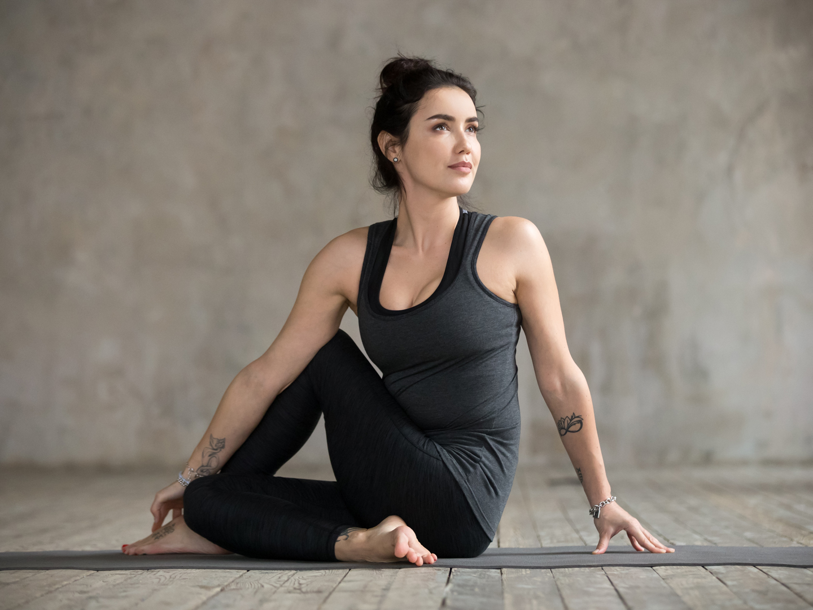

-
mani.dhawan90@gmail.com neejos@gmail.com -
Call Now
+ (4400) - 123 - 4567
Blog
4 Yoga Poses for Healthy Lungs
Breathing in yoga takes high priority. According to yoga, breath or ‘prana’ is the life force or the primary energy of life. It is the basic life force that controls our life.Pranayama or yogic breathing involves abdominal, thoracic and clavicular breathing which helps in gaining control of your breath, correct poor breathing habits and increase oxygen intake. The standing asanas can strengthen the back muscles and increase oxygenation and lung capacity. Here are four yoga poses you can try to improve the health and functioning of your lungs.
Trikonasana / Triangle Pose
Stand with your feet about 4 feet apart. Interlace your fingers behind your back (or use a strap), and straighten your arms. Fold forward, lifting your arms up toward the ceiling. Keep the weight evenly distributed in your feet, with the legs engaged. Breathe deeply, inviting your chest to open and lungs to clear. This inversion can be wonderful for draining mild chest congestion (excess kapha dosha). With each exhalation, loosen up and invite the day’s tension to release.
Matsyasana / Fish Pose
From Wide-Legged Forward Bend, place your left hand on a block at a comfortable height, in line with your sternum. Twist to your right, ensuring an even spiral from the tailbone through the back of the neck. Direct 3-6 deep breaths into your side ribs—inviting the intercostal muscles to loosen and the lungs to open. This is an excellent pose for removing tension and congestion from the chest! Carefully unwind and repeat on the other side.
Knee-Down Squat
From Tabletop, curl your toes under, and bring your inner feet to touch. Spread your knees wide, sit back on your heels, and raise your arms overhead. Interlace your fingers and turn your palms toward the sky. Soften your shoulders, tuck your chin, and pull your belly in. Breathe evenly into your side rib cage, gently stretching your intercostal muscles and airing out the lungs. Hold for 6–10 deep breaths. This simple pose tends to be quite challenging as heat and sensation build in the feet and legs. Try to soften in order to receive the enhanced warmth, circulation, and alertness. Mindfully release back to Tabletop.
Balasana (Child’s Pose, variation)
From hands and knees, lower your hips onto your heels, and press back to Child’s Pose with straight arms. Walk your hands to the left until you feel a good stretch along your right torso. Gently breathe into your right side ribs to loosen and stretch the side torso. Hold for 6-10 soothing breath cycles. Invite your entire body to soften and relax. Repeat on the other side.